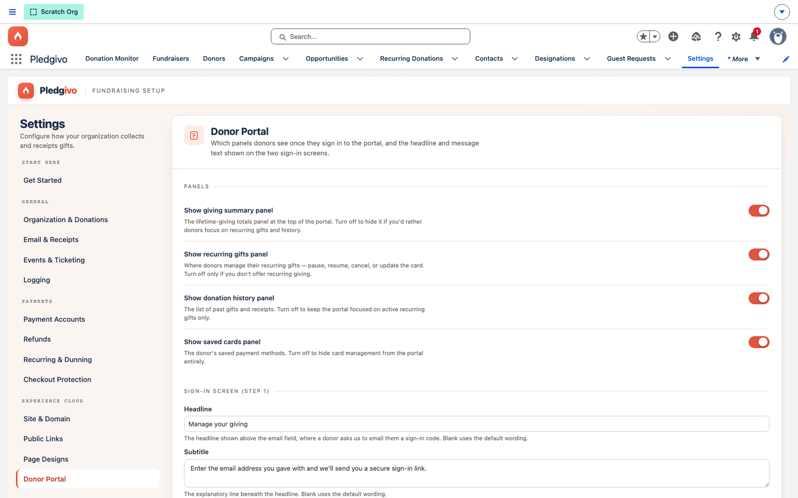

Guides
Publish a donor portal page#
Donors don't create an account or log in. A link mailed or emailed to them is the access grant — the token in the URL is the only credential.
Why token-based, not login-based#
Requiring donors to create a portal login is friction most never clear — a login they'll
create once and forget. The donor portal instead uses a signed, single-purpose link
(/donor?t=…); anyone with the link can view that specific donor's dashboard, and no one
without it can. This is a deliberate trade-off: possession of the link is the
authentication. Links are generated and delivered by Salesforce in a dedicated magic-link
email, sent only when a donor explicitly requests access (see step 2) — never typed in or
guessable, and the token is not a record Id and record Ids are never used to address these
pages directly.
Before you start#
Confirm you have an Experience Cloud site provisioned, including a Donor Dashboard page at the
donor URL (Professional edition orgs and orgs without a site can't publish this) — see
Set up your Experience Cloud site if you
haven't built it yet. The Fundraising_GuestDonor permission set must be assigned to the
site's guest user profile.
1. Enable the portal#
Settings → Experience Cloud → Donor Portal. Turn on the panels you want donors to see —
giving summary, recurring gift management, giving history, saved payment methods. Each is an
independent "Show panel" toggle — turn it on to show that panel to donors, off to hide it.
(Under the hood these are stored as inverted Donor_Portal_Hide_*__c fields, but the panel
presents them as normal, positive-framed toggles.)

**What it shows.** The Donor Portal panel's Panels section — toggles for the giving summary, recurring gifts, donation history, and saved cards sections, each with helper text — and the start of the Request-Link Screen copy fields below.
2. Customize the request-link and confirmation screens#
The same panel controls the copy shown on the "request a link" screen (where a donor who didn't keep their original link can ask for a new one by email) and the confirmation screen shown after a link is requested. Both default to reasonable generic copy; personalize them with your org's name and tone.
3. Set empty-state messaging#
If a donor has no recurring gifts or no giving history yet, the portal shows an empty-state message rather than a blank panel — customize this too, so a first-time donor doesn't land on something that reads like an error.
4. Publish the Experience Cloud site#
Publishing the underlying Experience Cloud site is a separate step from the Settings toggles above — Setup → Digital Experiences → your site → Publish. Settings changes take effect immediately for anyone with a valid link; site-level changes (a new LWC version, for example) require a publish to go live for guest users.
Publish, then hard-reload before verifying
A deploy alone is not enough for guest-visible changes to take effect — the Experience Cloud site must be explicitly published. After publishing, hard-reload the page before checking your work; a cached bundle can otherwise make a successful publish look like it didn't take.
What donors can do#
| Panel | Capability |
|---|---|
| Recurring gifts | View active recurring gifts; pause or resume; retry a failed charge immediately or reinstate a lapsed gift; switch the saved card a gift charges, or add a new card (via a Stripe SetupIntent); cancel |
| Giving history | View and download receipts for past gifts |
| Event tickets | View and print tickets for events they've registered for (/tickets?token=…) |
Related#
-
Recurring giving
What donors are changing when they switch a saved card.
-
Donors & accounts
How a donor's identity resolves regardless of account model.
-
Settings & integrations
Where donor-portal configuration sits in the settings model.